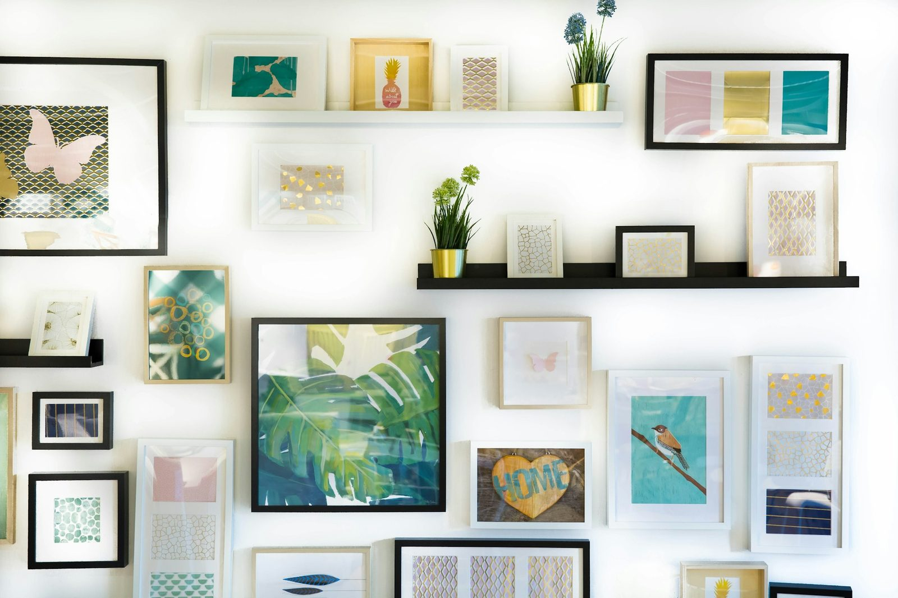
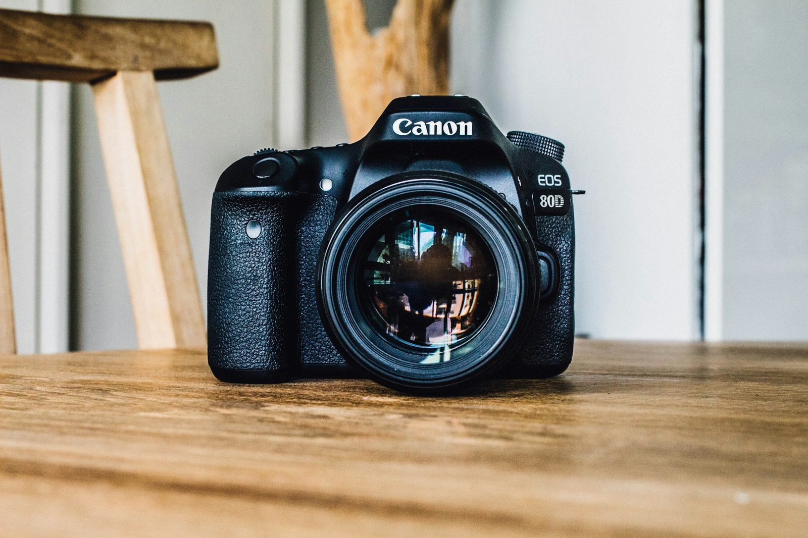
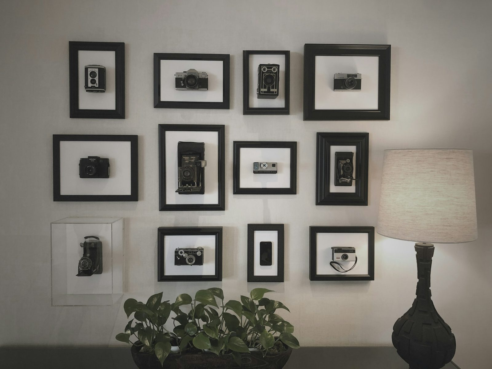
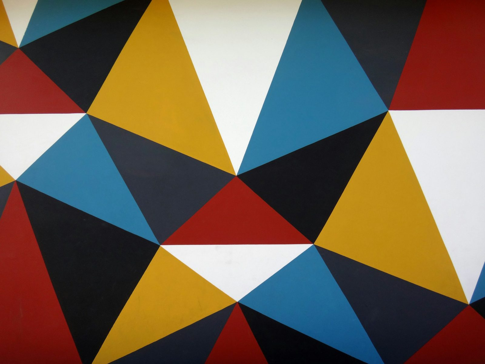
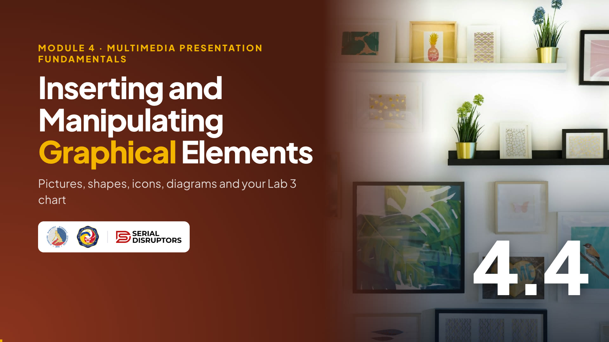

Module 4 · Multimedia Presentation Fundamentals
Pictures, shapes, icons, diagrams and your Lab 3 chart: placed neatly, used legally, described for everyone.

Welcome back! In 4.3 we cut our words down. Today we replace some of those words with pictures, shapes, icons and charts.
The highlight: we'll put the Lab 3 inventory chart into our Lab 4 deck, which is one of the graded requirements. Ask everyone to open two files now: their Lab 4 presentation and their Lab 3 spreadsheet. Also have the Lab 1 image ready if they prefer to use that.
Warm-up · type A or B in the chat
A · A table
| Item | Total Cost ₱ |
|---|---|
| Bond paper, A4 | 6,125.00 |
| Bond paper, long | 7,950.00 |
| Ballpen, black | 960.00 |
| Folder, long | 2,080.00 |
| Fastener | 510.00 |
| Staple wire #35 | 384.00 |
| Printer ink, black | 2,800.00 |
| Envelope, brown long | 1,230.00 |
B · A bar chart
Give them 10 seconds, then ask for A or B in the chat. Almost everyone picks B: the longest bar jumps out, while the table makes you read and compare eight numbers.
Both show the same Lab 3 data. The table is better when people need exact figures; the chart is better when they need the pattern. Today we learn to use both, plus pictures, shapes and icons, without making a mess.
By the end of this topic
Including your Lab 3 chart or Lab 1 image.
Without stretching or crooked placement.
Free sources, consent for people photos, descriptions for screen readers.
Three verbs: insert, arrange, respect. The third one matters a lot in government work: copyright and privacy apply to the photos we use too.
Read the Lab 4 requirement aloud. By the end of this topic, slide 4 of their "My Digital Skills Journey" deck should contain the Lab 3 chart with a clear title and alt text.
Pictures
| App | Where |
|---|---|
| PowerPoint | Insert › Pictures › This Device (also Stock Images in Microsoft 365) |
| Google Slides | Insert › Image › Upload from computer (or Drive) |
| Impress | Insert › Image |

Demo all three ways in PowerPoint: the Insert tab, dragging from File Explorer, and pasting a screenshot. Pasting is fastest for screenshots: Windows + Shift + S to capture a part of the screen, then Ctrl+V on the slide.
If the slide has a content placeholder, click the small picture icon inside it; the photo then fits the layout. Ask: "Where's your Lab 1 image saved?" Make sure they can find it before the next activity.
Resize
Original
Side handle: stretched
Corner handle: same shape
Stretched photos are the number one sign of an amateur deck. Faces become wide, logos become squashed, and the official seal looks wrong.
Demo: drag a side handle to stretch a photo, let everyone laugh, then undo. Drag a corner handle instead. In PowerPoint, pictures keep their proportions from the corners by default; holding Shift makes sure. Note the third picture is only smaller, not wider.
Crop and compress
Extras: Crop to Shape (circle for a profile photo) and Aspect Ratio (1:1, 16:9). Google Slides: double-click the image. Impress: right-click › Crop.
Phone photos can be several MB each. Ten of them make a deck too big to email.
Impress: right-click › Compress. Google Slides handles sizes for you in Drive.
Demo cropping a photo to remove an untidy background, then Crop to Shape with an oval for a profile picture.
Then compress. Show the file size in File Explorer before and after. Gmail attachments are limited to 25 MB, and many office emails are stricter, so compressing matters before sending a deck. Warn them: deleting cropped areas is permanent for that file, so keep the original photos in a folder.
Shapes and icons
Demo: draw a rounded rectangle, type "Bond paper" inside, then add an arrow. Then Insert, Icons, search "printer" and "envelope", and recolour them to match the theme.
The Icons button is in Microsoft 365 versions of PowerPoint. If someone has an older version or Google Slides, simple shapes or emoji-free text labels work fine. Ask: "Which three icons would you put on your 'four new skills' slide?"
SmartArt and diagrams
Before: bullets
After: a process diagram
| App | How |
|---|---|
| PowerPoint | Select the bullets › Home › Convert to SmartArt, or Insert › SmartArt. Pick Process, Cycle or Hierarchy. |
| Google Slides | Insert › Diagram (Grid, Hierarchy, Timeline, Process, Relationship, Cycle) |
| Impress | No SmartArt: build it with Insert › Shape plus connectors, then group |
Demo the magic button: type four bullets, select them, Home, Convert to SmartArt, and hover over the options. A list becomes a process in one click.
Choose the diagram that matches the meaning: process for steps in order, cycle for something that repeats like a monthly report, hierarchy for an org chart of the section. Ask: "Which diagram fits 'how a taxpayer document moves from receiving to records'?" A process.
Charts · Lab 3 into Lab 4
Total ₱22,039.00 · Source: Lab 3 Office Supplies Inventory
Google Slides: Insert › Chart › From Sheets (stays linked; click Update when the data changes). Impress: copy from Calc and paste.
These are the real Lab 3 numbers: bond paper long ₱7,950, A4 ₱6,125, together ₱14,075 of the ₱22,039 total, which is about 64 percent. That's why the title can say "Bond paper is 64% of our supplies cost".
Demo copy and paste from Excel. Show the Paste Options: "Use Destination Theme" makes the chart match the slide colours. A Picture is safest when you'll send the file to others. Anyone without a chart can use Insert, Chart in PowerPoint and type the numbers.
Tables
Our top 3 supply costs
| Item | Qty | Total Cost ₱ |
|---|---|---|
| Bond paper, long | 30 reams | 7,950.00 |
| Bond paper, A4 | 25 reams | 6,125.00 |
| Printer ink, black | 8 bottles | 2,800.00 |
Highlighted row = the one you're talking about.
Tables and charts aren't rivals. A chart shows the pattern; a table shows exact values. For a briefing, you might show the chart, then this small table when the chief asks "how many reams?"
Demo Insert, Table, 3 columns by 4 rows, and type the top three rows. Then show the Table Design tab for a simple style. Remind them of the hidden backup slide from 4.2: the full 8-row table can live there.
Try it now · Lab 4, slide 4
Start the 6-minute timer. Circulate in the chat; this step completes one of the Lab 4 graded requirements.
Common issues: the chart pastes huge (resize from a corner); colours change (that's "Use Destination Theme", which is fine); Google Slides users need the chart in Google Sheets first. If someone's Lab 3 chart is a pie chart, the message title still works: "Bond paper takes the biggest slice."
Align and distribute
By eye
Aligned + distributed

When we hang family photos on the wall at home, we use a level and a measuring tape. The Align and Distribute commands are that level and tape.
Demo: place three icons roughly, select all three with Shift+click, then Align Middle and Distribute Horizontally. Also point out PowerPoint's Smart Guides, the red dashed lines that appear while dragging. Ask: "Which of your Lab 4 slides has items that should line up?"
Group and arrange
Shortcuts shown are PowerPoint. Google Slides: Arrange › Order and Arrange › Group. Impress: Shape › Arrange and Shape › Group.
Every object on a slide is a sheet of paper on a pile. The last one you inserted sits on top. Bring Forward and Send Backward move it through the pile.
Demo: put a label on a photo, send the photo backward, then group them with Ctrl+G so they move as one. Open the Selection Pane: it's the lifesaver when a big photo covers everything and you can't click what's underneath.
Picture styles

Clean and modern.
Lifts the photo gently. Use the same on every slide.
Draws attention to the frame, not the picture.
PowerPoint's Picture Styles gallery is fun: frames, reflections, 3D tilts. The danger is using a different one on every slide, which breaks the repetition principle from 4.1.
Demo: click a photo, hover over a few Picture Styles, and pick a simple one like a soft shadow. Then use Format Painter to copy that style to the next photo. Ask: "Which would you choose for an official briefing?" Plain or soft shadow.
Using images legally
Safest. Your Lab 1 image, office photos you took (with permission).
Unsplash, Pexels, Pixabay: free to use under each site's licence.
Many licences; read each one and give the credit it asks for.
PowerPoint Insert › Pictures › Stock Images (Microsoft 365).
Many of us right-click and save from Google Images. Google only finds pictures; it doesn't give permission. Use the sources on screen instead; the photos in these training decks come from Unsplash.
The privacy point matters for BIR staff: a photo of a taxpayer at the counter, or a screenshot showing a TIN, must never go into a slide. Even colleagues should be asked before their photo appears in an orientation deck. Ask: "Where will you get the photos for your Lab 4?"
Accessibility
Useless alt text
Helpful alt text
Say what it shows and what it means, in one or two sentences.
| App | Add alt text |
|---|---|
| PowerPoint | Right-click › View Alt Text (or Edit Alt Text) |
| Google Slides | Right-click › Alt text |
| Impress | Right-click › Description (or the Alt text option) |
Screen readers read alt text aloud for people with visual impairment. It also appears if an image fails to load, and in PowerPoint's Check Accessibility from 4.1.
Demo: right-click the chart, View Alt Text, and type a helpful description. PowerPoint may suggest automatic alt text; always check and rewrite it, because it often says only "a chart" or guesses wrong. Ask everyone to add alt text to their Lab 4 chart now if they skipped it.
Graphics that help
Walk through both columns. In the office, graphics should make decisions faster. At home, they make memories and money talks clearer.
The household budget chart is a nice home version of Lab 3: show the family where the money goes each month, CEPALCO bill included. Ask in the chat: "Which home slideshow are you planning: a birthday, a reunion, or your small business?"
Watch · 5 minutes
See how to insert pictures, icons, SmartArt and the Lab 3 chart, arrange them without stretching or crooked placement, and respect copyright, privacy and alt text.

5:05Introduce the video in one or two sentences, then read the While watching task aloud so everyone knows what to look for.
Press → to open the video full screen. In Zoom or Meet, share this tab with computer sound turned on.
Space or K plays and pauses (or click the video). C turns captions on or off; the speed button offers 1.25× and 0.85×. The arrows still move between slides, and the video pauses when you leave this slide.
Length 5:05. Pause anywhere to take a question; captions stay on screen for anyone without sound.
After the video, go back to the While watching task: ask two or three people for their answers.
Quick check · click an answer
Let them type A to D in the chat, then reveal. C is correct.
Quick follow-up: "And if the photo is the right shape but too wide for the space?" Crop it, don't squeeze it. Then ask everyone to check their Lab 4 slides for any stretched picture before the next topic.
Recap · Topic 4.4
Pictures, shapes, icons, SmartArt, the Lab 3 chart, a small table.
Corners not sides, crop and compress, align, distribute, group, layer.
Free or own photos, consent for faces, alt text on every picture.
Next · 4.5 Applying Animations and Slide Transitions: gentle motion, applied uniformly.
Summarize: insert, arrange, respect. Everyone's Lab 4 deck should now have the Lab 3 chart or Lab 1 image, with alt text.
Bridge to 4.5: "Our slides look good standing still. Next, we add motion: transitions between slides, applied the same way across the whole deck, which is another Lab 4 requirement." Ask them to save now. Salamat!